Festival
Nangnerki
Du 26 mars au 4 avril 2027
Esplanade du Stade Babemba Traoré, Sikasso
« L'intégration culturelle comme levier de souveraineté, de paix et de développement durable des peuples »
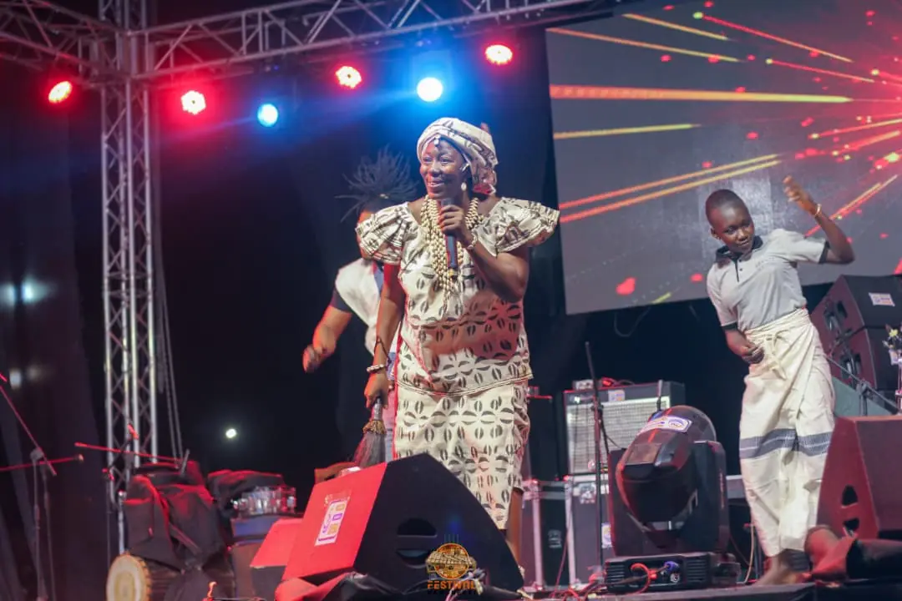
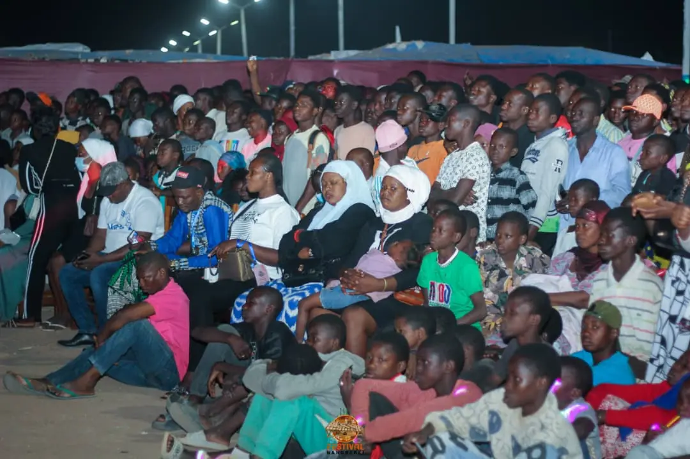
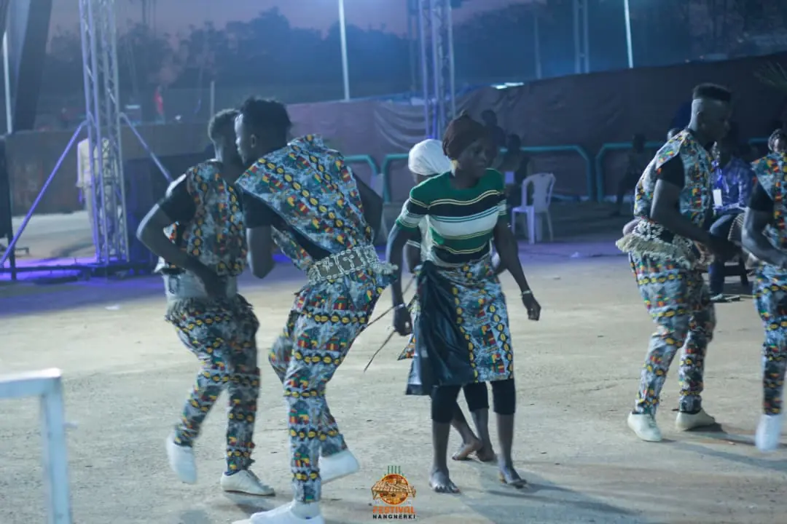
ÉDITION 7 · FÉVRIER 2026 · STADE BABEMBA TRAORÉ, SIKASSO
Un rendez-vous culturel majeur à Sikasso
Après sept éditions, le Festival Culturel International Nangnerki prépare sa huitième édition, avec un programme élargi dont les activités commencent un mois avant l'ouverture officielle.
L'innovation majeure : la décentralisation des activités culturelles dans les 19 quartiers de Sikasso, autour d'un grand concours inter-quartiers de danse de balafon, en collaboration avec la Coordination des jeunes et chefs de quartier.
Le festival est organisé par KASS FA COM SARL, en partenariat avec l'Association Culturelle Nangnerki (ACN).
NOS OBJECTIFS
Six axes, dix jours de festival
Concours inter-quartiers de balafon
Un concours de danse de balafon dans les 19 quartiers, avec grande finale sur la scène du festival.
Football inter-établissements
Un tournoi entre établissements scolaires de Sikasso : fair-play, esprit d'équipe et cohésion.
Assainissement avec les associations féminines
Des journées avant, pendant et après le festival, avec prix de participation et attestations.
Nuit de l'intégration
Cinq troupes de balafon du Mali, du Burkina Faso, de Côte d'Ivoire et de Guinée-Conakry.
Meilleur DJ de Sikasso
La Soirée blanche Nangnerki : une compétition publique en plein air, dress-code blanc.
Quatre jours de concerts géants
Du 1er au 4 avril : musique traditionnelle, urbaine, balafon et nouveaux talents.
Formation de 30 journalistes
Intelligence artificielle et journalisme : outils, vérification des faits et déontologie.
Rencontre des autorités transfrontalières
Gestion concertée des conflits liés aux ressources naturelles partagées.
Foire-exposition internationale
Artisanat, agroalimentaire, textile, cosmétiques, commerce et industries culturelles.
Village Nangnerki et village gastronomique
Une vitrine du tourisme de la région de Sikasso et de la cuisine malienne et des pays invités.
Village des enfants
Jeux éducatifs, peinture, dessin, bogolan, jeux traditionnels et structures gonflables.
Nangnerki Fashion Night
Bogolan, tissage et création : 5 créateurs, 5 tisserands et 5 stylistes pour 20 créations.
Du 1er mars au 4 avril 2027
Programmation artistique des concerts à annoncer. Le programme peut être ajusté par l'organisation.
Le balafon réunit les 19 quartiers
Un concours de danse de balafon est organisé dans chacun des 19 quartiers de Sikasso. Le meilleur danseur de chaque quartier se qualifie pour la grande finale, sur la grande scène du festival.
Les participants reçoivent un certificat de participation et une reconnaissance officielle du festival.
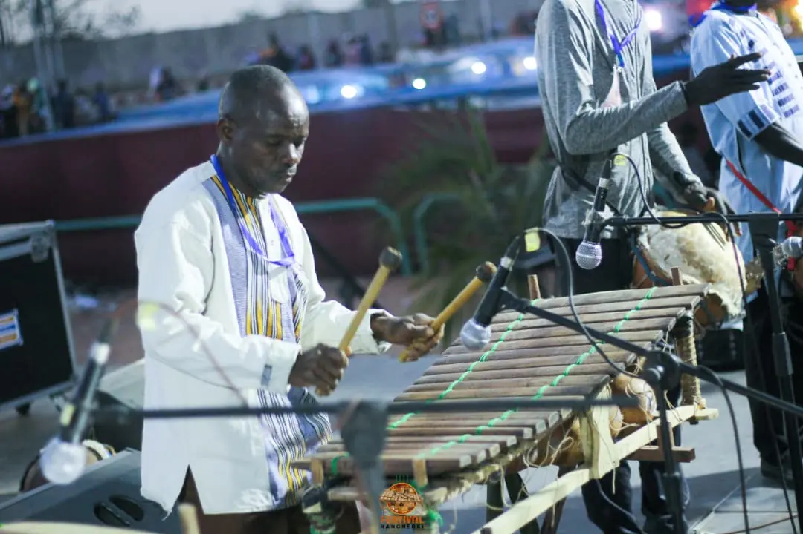
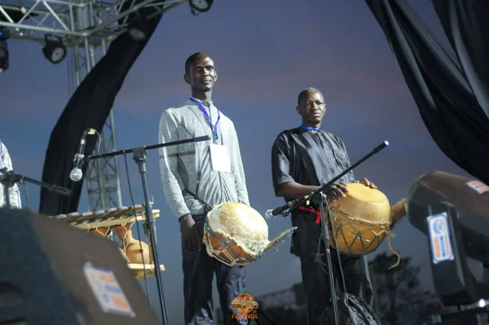
Les récompenses
2e : 150 000 FCFA
3e : 100 000 FCFA
Nuit de l'intégration
Exposez devant 30 000 visiteurs et 500 000 personnes touchées
Une grande foire-exposition accueille pendant toute la durée du festival des exposants du Mali et des pays invités : un espace de promotion, de vente et de rencontres commerciales.
Deux espaces thématiques complètent la foire : le Village Nangnerki (tourisme et patrimoine) et le village gastronomique (cuisine malienne et spécialités des pays invités).
L'admission est effective après réception du formulaire signé et paiement des frais de participation, selon le règlement des exposants.
SECTEURS REPRÉSENTÉS
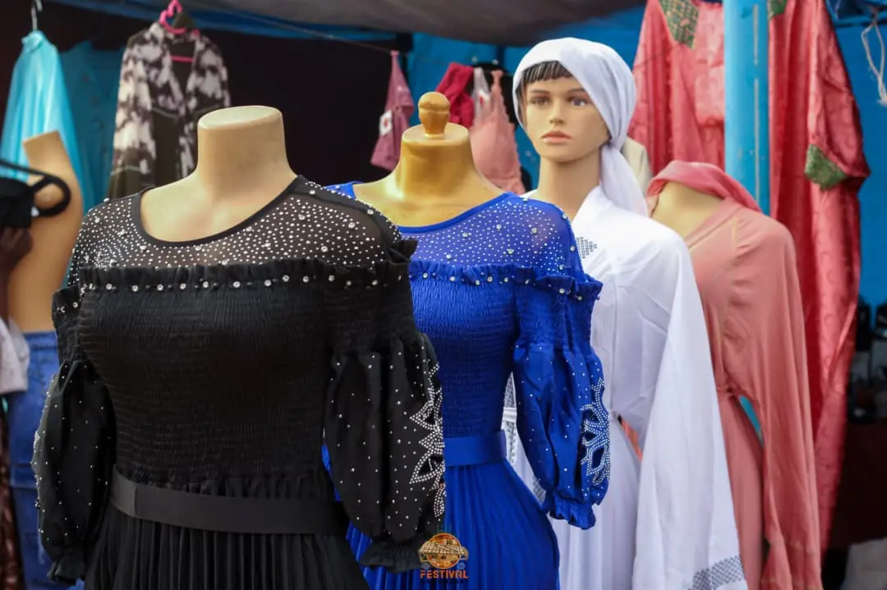
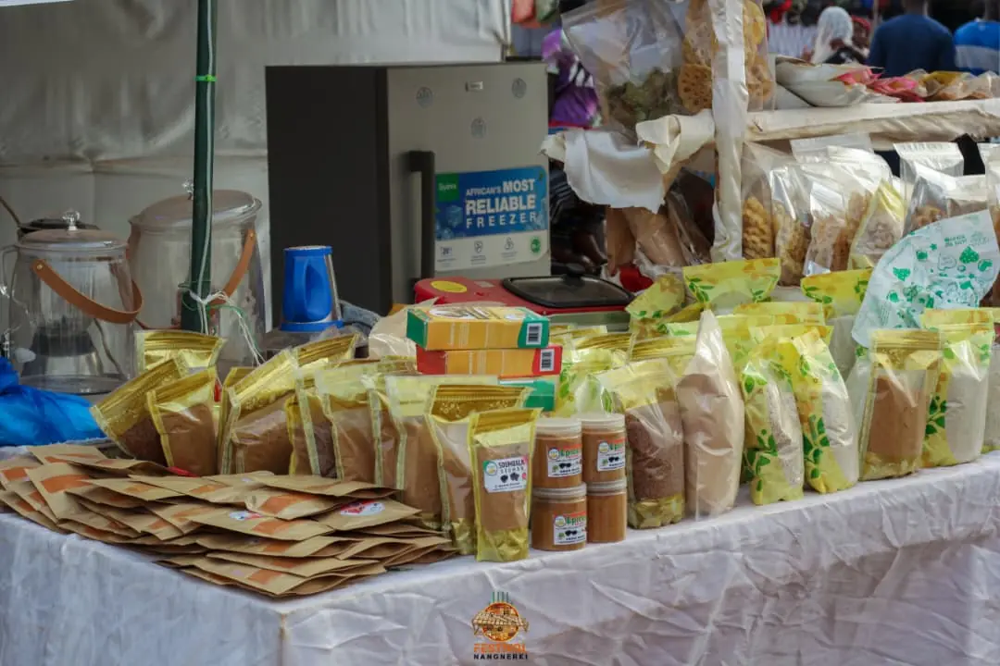
Associez votre image au festival
Institutions publiques, collectivités, entreprises, organismes internationaux et partenaires techniques et financiers : le festival vous propose plusieurs formes d'engagement, avec des espaces de visibilité sur le site et sur les supports de communication.
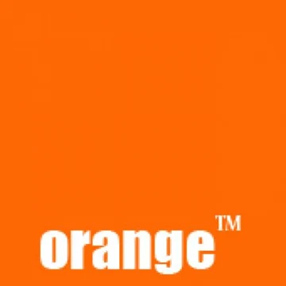
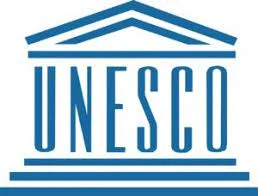
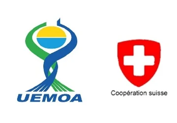
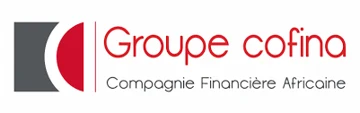
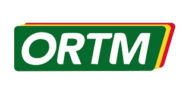
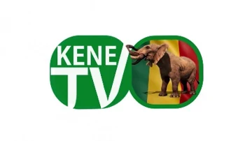
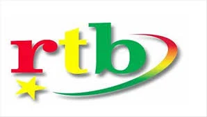
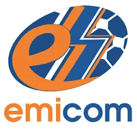
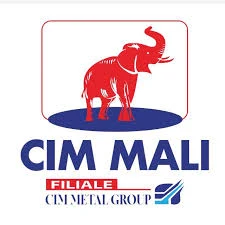
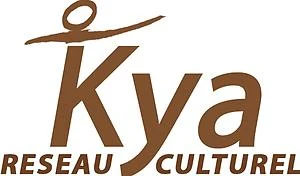
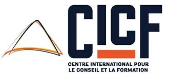
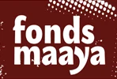
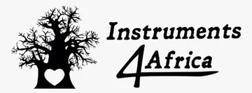
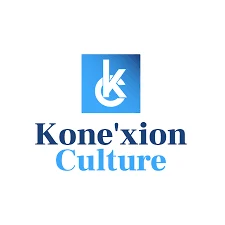
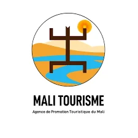
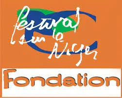
Quatre temps forts pour votre visibilité
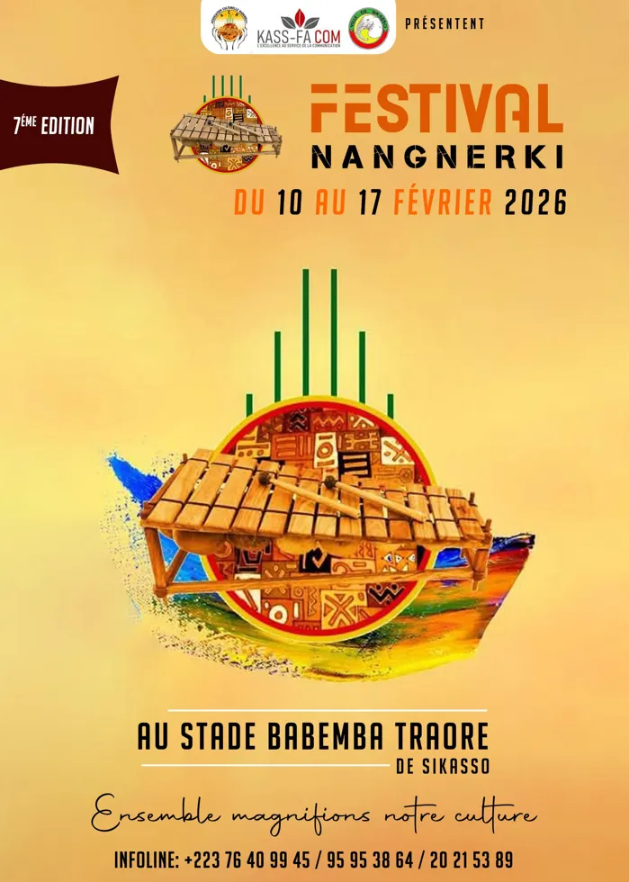
10 au 17 février 2026
La 7e édition s'est tenue au Stade Babemba Traoré avec une foire-exposition, une Coupe Nangnerki de football, de la lutte traditionnelle, un atelier de formation pour journalistes, des panels et quatre concerts géants.
« Ensemble magnifions notre culture. »
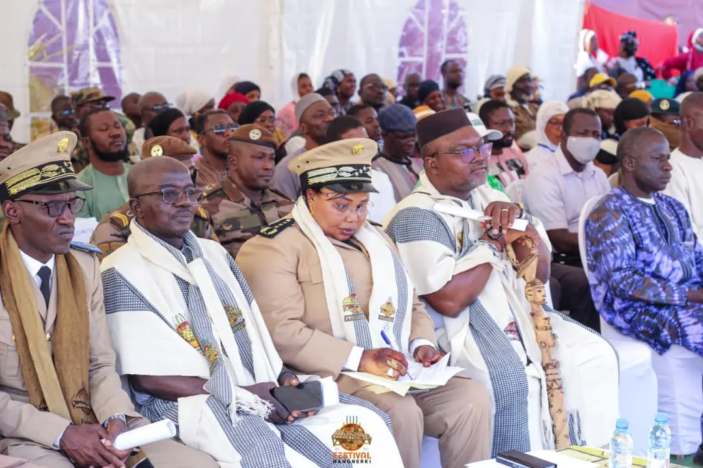
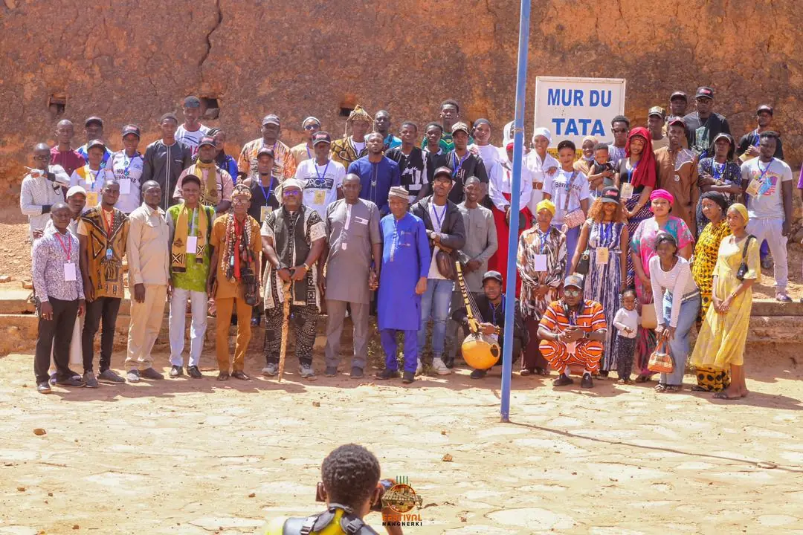
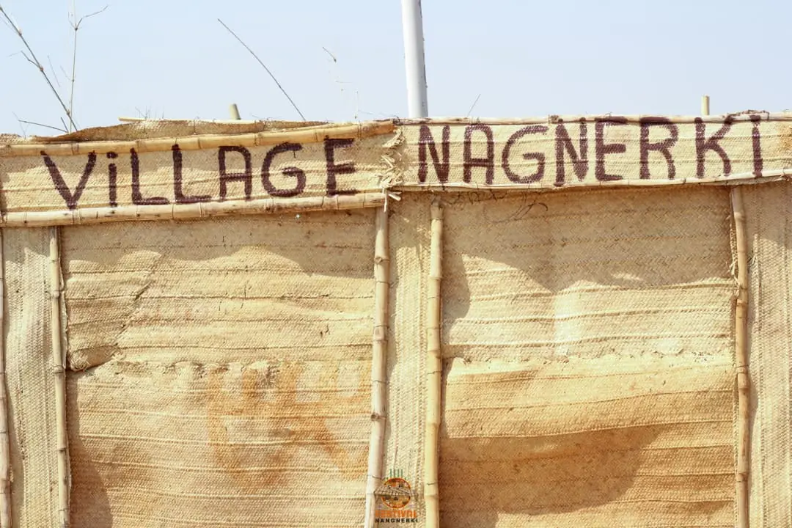
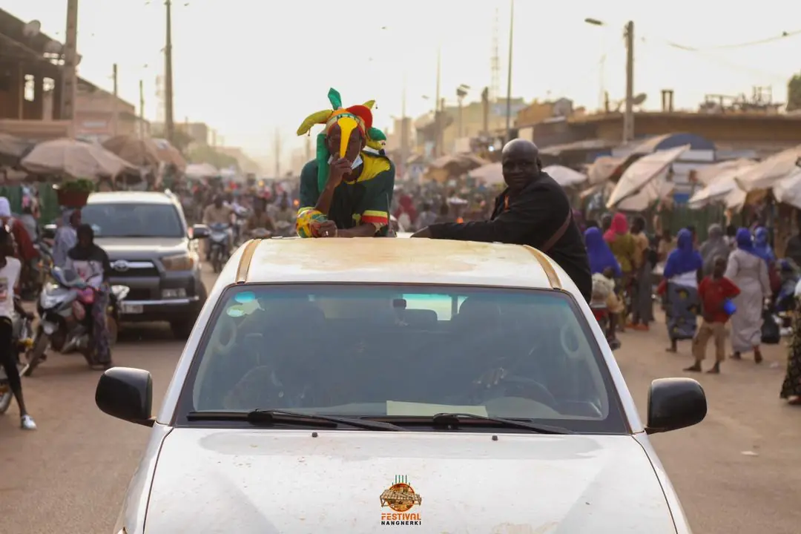
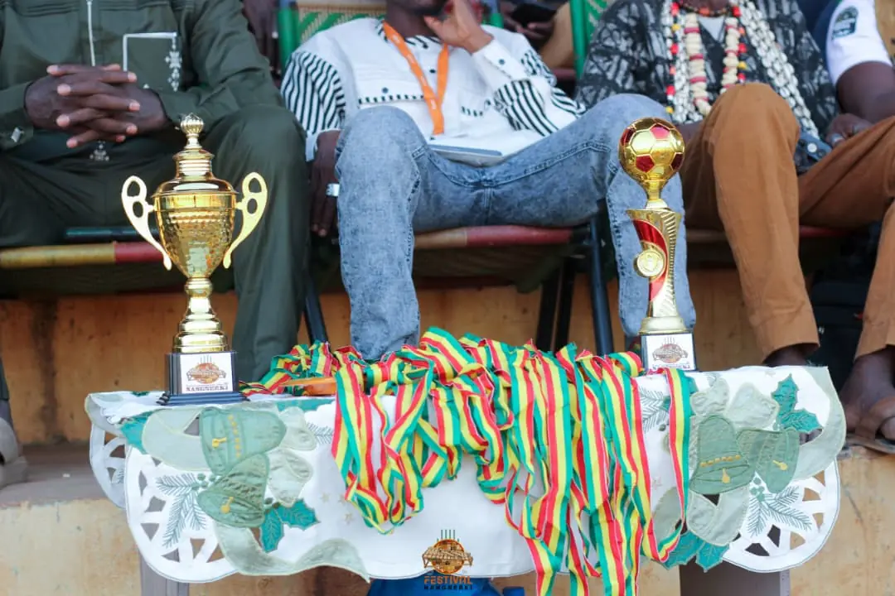
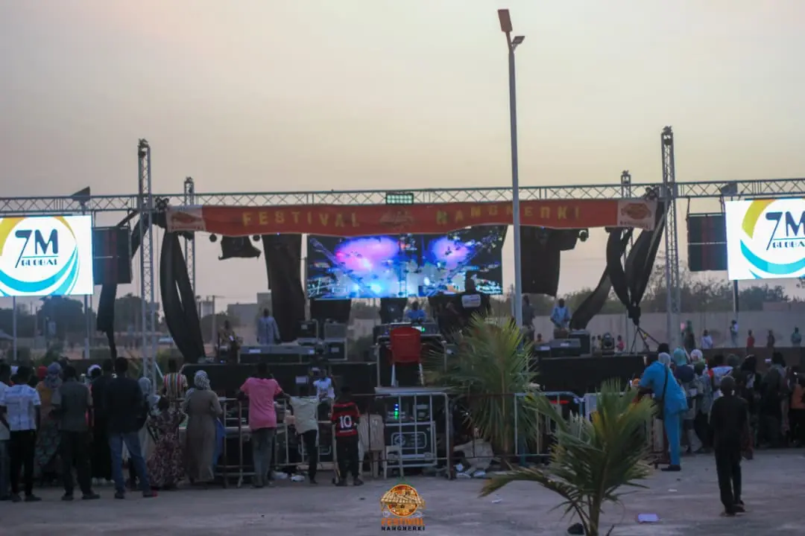
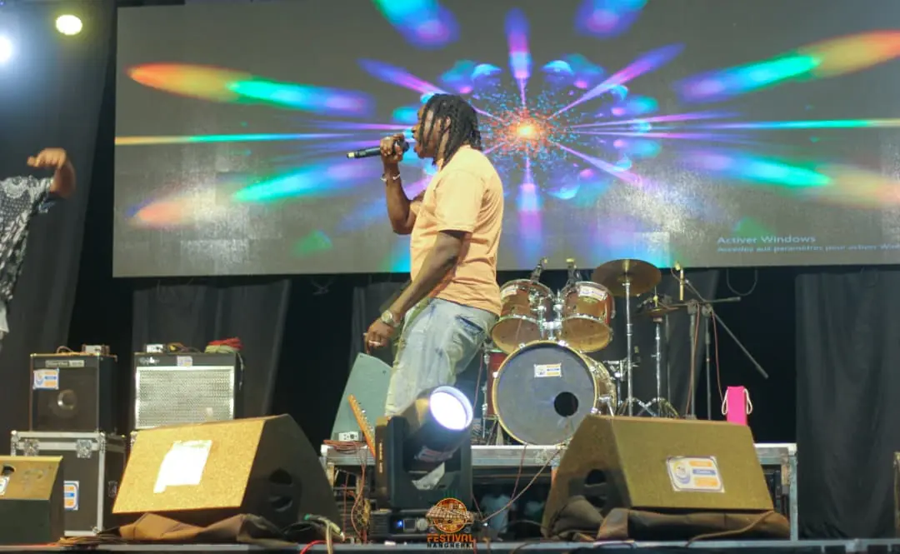
Nous contacter
Infoline du festival :
+223 66 66 45 47
+223 76 40 99 45
Esplanade du Stade Babemba Traoré, Sikasso, Mali
Être recontacté
Laissez votre nom et votre numéro : l'équipe vous répond sur WhatsApp.